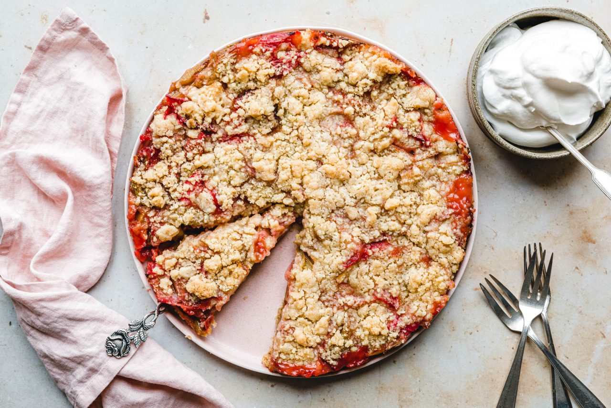

Rhabarberkuchen

Ein feiner Haferflockenkeksboden, eine süß-säuerliche-saftige Rhabarberfüllung,
satte,buttrige Streusel und als i‑Tüpfelchen eine zart schmelzende Sahnewolke
– das ist unser liebster veganer Rhabarberkuchen mit Streuseln!
Zutaten
- 150 g blütezarte Haferflocken
- 50 g Weizenmehl
- 75 g Zucker
- 1/4 TL Zimt
- 1 Prise Salz
- 80 g vegane Butter
FÜR DEN BODEN
- Haferflocken, Mehl, Zucker, Zimt und Salz vermengen. Kalte, vegane Butter in
kleine Würfel schneiden, zur Mehlmischung geben und mit den Händen rasch
zu einem bröseligen Teig verkneten. Den Boden einer Springform mit Backpapier
auslegen, die Seiten mit etwas veganer Butter oder Öl fetten. Den Teig mit
den Händen gleichmäßig am Boden festdrücken. Zum Schluss alles mit einem
Esslöffel glattstreichen und bis zur Weiterverarbeitung in den Kühlschrank
stellen. Backofen auf 180 °C Ober-/Unterhitze vorheizen.
- Den Boden einer Springform mit Backpapier auslegen, die Seiten mit etwas
veganer Butter oder Öl fetten. Den Teig mit den Händen gleichmäßig am
Boden festdrücken. Zum Schluss alles mit einem Esslöffel glattstreichen
und bis zur Weiterverarbeitung in den Kühlschrank stellen.
FÜR DIE FÜLLUNG
- Rhabarber waschen, nicht schälen und in 1–2 cm große Stücke schneiden.
- Vegane Butter in einen heißen Topf geben, Zimt und Zucker 30 Sekunden
unter Rühren bei niedriger bis mittlerer Hitze anschwitzen. Rhabarber
hinzugeben und 3 Minuten schmoren, bis etwas Saft austritt. Ab und zu
umrühren. Speisestärke unterrühren und 3–4 Minuten leicht köcheln lassen,
dabei häufig umrühren
- Masse in die Springform füllen und beiseite stellen.